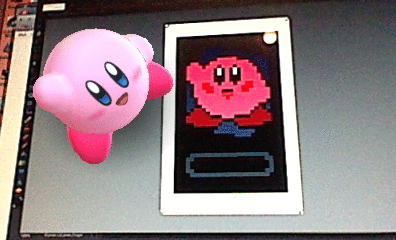
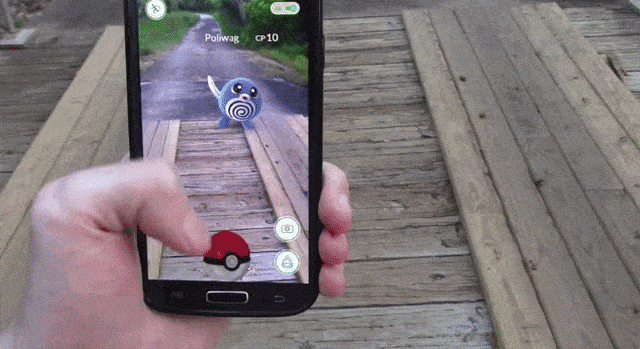

La Realidad Aumentada es un tipo de tecnología que nos permite añadir capas de información visual sobre el mundo real que nos rodea. Dicha información se puede ver a través de diferentes dispositivos como pueden ser nuestros propios teléfonos móviles. Esto nos ayuda a generar experiencias que aportan un conocimiento relevante sobre nuestro entorno y que nos permiten recibir esa información en tiempo real. Mediante la realidad aumentada el mundo virtual se entremezcla con el mundo real, de manera contextualizada, y siempre con el objetivo de comprender mejor todo lo que nos rodea.
Lo que hace que la realidad aumentada sea una tecnología con un potencial enorme y la convierte en una de las principales armas de innovación son sus características principales:
Permite la combinación del mundo real y el mundo virtual. Gracias a la RA podemos interactuar en el mundo real con elementos del mundo virtual, mezclando así lo mejor de ambos. De esta forma nos permite tener experiencias más completas que no serían posibles sin el uso de la realidad aumentada.
Depende del contexto. La información que incluimos tiene relación directa con la información que vemos con nuestros propios ojos. De esta manera podremos ver nuestro entorno real con la información añadida que nos proporciona la RA, formando así una imagen más completa.
Es interactiva en tiempo real. Cualquier cambio, acción, interacción o respuesta que realice el usuario tiene una repercusión inmediata en la escena recreada con realidad aumentada. La realidad aumentada interactúa, por lo tanto, con nosotros en tiempo real, proporcionándonos una experiencia más realista.
Utiliza las tres dimensiones. La información se muestra siempre con perspectiva, dando la sensación de que adquiere la capacidad física de su entorno. Además, gracias a la evolución de esta tecnología (como explicamos más abajo en el apartado de Espacios), se puede interactuar directamente con las capacidades físicas del entorno.
Hay diversos tipos de realidad aumentada dependiendo del objetivo final que se busque y, sobre todo, de los componentes del mundo real que entren en juego. Aquí te hablamos de una forma más general de cómo puede categorizarse la AR pero si quieres saber todos los tipos de AR que existen puedes leer este post sobre los diferentes tipos de realidad aumentada, con sus descripciones detalladas y sus ejemplos. Además, si quieres ampliar la información y saber acerca del funcionamiento de esta tecnología, te recomendamos que leas este post sobre cómo funciona la RA. Imágenes Cualquier imagen es válida para colocar contenido de realidad aumentada sobre ella. En el pasado se utilizaban comúnmente elementos predefinidos, conocidos como «Markers», con apariencias similares a las de un código QR. Ahora, gracias a las nuevas técnicas de clasificación de imágenes, la realidad aumentada es mucho más natural, pudiendo utilizarse cualquier elemento del entorno, como el logo de una empresa, una tarjeta de visita, la carta de un restaurante, o el mapa turístico de una ciudad, por citar algunos ejemplos. Esto hace que puedas aprovechar al máximo tus propios diseños, sin la necesidad de tener que diseñar nuevos “marcadores” para poder activar la experiencia de RA.
 